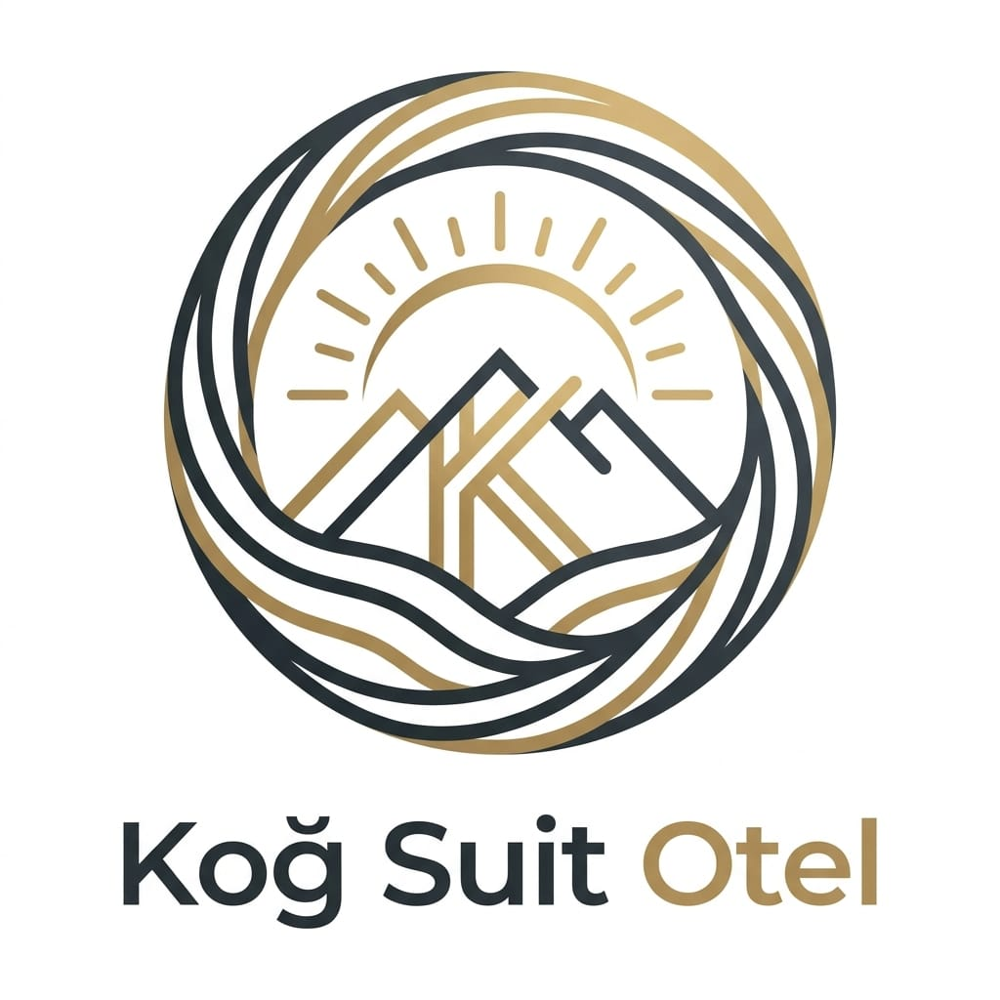

Koğ Suit Otel · Refined Hospitality in Varto
Anadolu'nun sakin zeytin yeşili, sıcak krem ve antika altın aksanlarıyla kurulmuş, butik bir otel deneyimi için tasarlanmış görsel dil.
01 · Renk Paleti
Sahibinin önerdiği zeytin yeşili etrafında, logoyu da ayakta tutacak antika altın aksanıyla kurulmuş palet. Üç ana kombinasyon: sakin (yeşil-krem), ısı (kahve-altın), kontrast (ink-yüzey).
Primary Dark
#4A5240
Heading üstü, koyu menü
Primary main
#6B7553
CTA, vurgular, link rengi
Primary Light
#A8B091
Hover, ikon arkası, devre dışı
Primary Soft
#E5E8DC
Bilgi banner, tag arkası
Secondary
#8B6F4E
İkincil bölüm ayraçları
Secondary Light
#C9B79A
Sıcak info kartları
Accent logo köprüsü
#B89B6E
Link altı, ikon vurgusu
Accent Dark
#8B7449
Üst başlık etiketleri
Surface
#F7F4ED
Ana sayfa arka planı
Surface Alt
#EFEAE0
Bölüm ayrıcı, section bg
Ink
#2A2D24
Ana metin (sıcak siyah)
Ink Soft
#5A5D52
İkincil metin, açıklama
#5A8A5E
#C49A4D
#B14B3A
02 · Tipografi
Başlıklar Manrope (geometrik, modern, sıcak). Gövde metni Inter (okunaklı, nötr). Tracking değerleri başlıkta sıkı, etikette geniş.
Başlık Ölçekleri
H1 · Manrope 700 · 48-64px · -2% tracking · line 1.1
H2 · Manrope 600 · 32-40px · -1% tracking · line 1.2
H3 · Manrope 600 · 20-24px · 0% tracking · line 1.3
KONAKLAMA · REZERVASYON
label-caps · Manrope 600 · 12px · +20% tracking
Gövde Ölçekleri
Bu cümle body-lg ölçeğindedir. Açılış paragrafı, manifesto, giriş metinleri için kullanılır.
body-lg · Inter 400 · 18px · line 1.6
Bu cümle body-md ölçeğindedir. Varsayılan paragraf metni; oda açıklamaları, kart içeriği, SSS cevapları için kullanılır.
body-md · Inter 400 · 16px · line 1.6
Bu cümle body-sm ölçeğindedir. Yardımcı metin, alt etiket, form yardım metni için kullanılır.
body-sm · Inter 400 · 14px · line 1.5
03 · Logo
Mevcut logo lacivert + altın paletinde. Yeni "Olive Sanctuary" paletinde uyumlu bir versiyona ihtiyaç var. Aşağıda mevcut versiyon ve yeni versiyon için brief.
Mevcut Logo
Revize edilecek
Lacivert (#2C3E50 yakını) + Altın (#C5A059) + Beyaz. Dairesel çerçeve içinde dağ silüeti, güneş ve dalga motifleri. "Koğ Suit" lacivert, "Otel" altın.
Yeni Logo Brief'i
Stitch / Midjourney / yerel grafiker ile üretilebilir. Master SVG
alındığında resources/images/brand/
altına yerleştirilir.
Favicon · 32px
Koğ Suit Otel
Yatay tipografi
Koğ Suit Otel
Koyu zemin
Koğ Suit Otel
Tek renk · altın
04 · Bileşenler
Blade component'lerine birebir karşılık gelecek tasarım birimleri. Her birinin varyantları + durumları gösterilmiştir.
Butonlar
Form Alanları
check_circle Geçerli format
error Geçerli e-posta giriniz
Etiketler / Durum
Açılır Liste (SSS)
Check-in 14:00'ten, check-out 12:00'a kadardır. Erken giriş veya geç çıkış talebiniz varsa rezervasyon esnasında "Özel İstekler" bölümünden iletebilirsiniz.
Rezervasyon onayı sonrası tarafınıza iletilen IBAN'a havale ile ödeme yapabilirsiniz. Dekont WhatsApp üzerinden iletildiğinde rezervasyon kesinleşir.
Evet, küçük ırk evcil hayvanlar belirli odalarımızda kabul edilir. Lütfen rezervasyon öncesi iletişime geçiniz.
Varto'nun yeşil tepelerinde, şehir gürültüsünden uzak butik bir kaçış.
Bu Ay
23
Onaylı rezervasyon
"Varto'da geçirdiğim en huzurlu üç gün. Oda, manzara, ev sahipliği — her şey kusursuzdu."
Elif K.
İstanbul
05 · Sayfa Bölümleri
Component'lerin yan yana geldiğinde nasıl durduğunu, Stitch tasarımındaki sayfa düzenleri yeni paletle birleşince ne hale geldiğini göstermek için 5 önemli bölüm.
5.1 · Hero (Ana Sayfa Üst Bölümü)
Refined Hospitality in Varto
Varto'nun yeşil tepelerinde, beş özenli süitle huzurlu bir kaçışa davetlisiniz. Modern konfor, geleneksel sıcaklık.
Hızlı Müsaitlik
5.2 · Oda Kartları
Modern minimalist tasarım, ferah çalışma alanı, premium yatak.
gecelik
₺1.500
Geniş alan, oturma köşesi, panoramik manzara, jakuzi.
gecelik
₺3.500
Otelin amiral süiti. Özel teras, butler hizmeti, şömine.
gecelik
₺5.000
5.3 · Güven Bandı (Trust Band)
9.4
Booking.com Puanı
340+
Memnun Misafir
5
Özenli Süit
24/7
WhatsApp Destek
5.4 · Galeri (Bento Grid)
5.5 · Footer
Koğ Suit Otel
Refined Hospitality in Varto. Anadolu'nun sakin konağı.
Yasal
İletişim
06 · Erişilebilirlik
WCAG AA standardına göre kontrol edilmiş renk kombinasyonları. AAA seviyesi büyük metinler için, AA seviyesi 16px+ gövde metni için yeterli.
Surface üstünde Primary
#F7F4ED → #6B7553
Kontrast: 5.21:1 · AA ✓
Primary Dark üstü
#4A5240 → #F7F4ED
Kontrast: 9.32:1 · AAA ✓
Accent üstü Surface
#B89B6E → #FFFFFF
Kontrast: 3.18:1 · AA Large only ⚠
⚠ Not: Accent (antika altın) küçük metin için yetersiz kontrast verir. Sadece büyük başlık (18px+ bold) veya ikon/border olarak kullanılmalı; gövde metni için Primary veya Ink kullanılmalı.